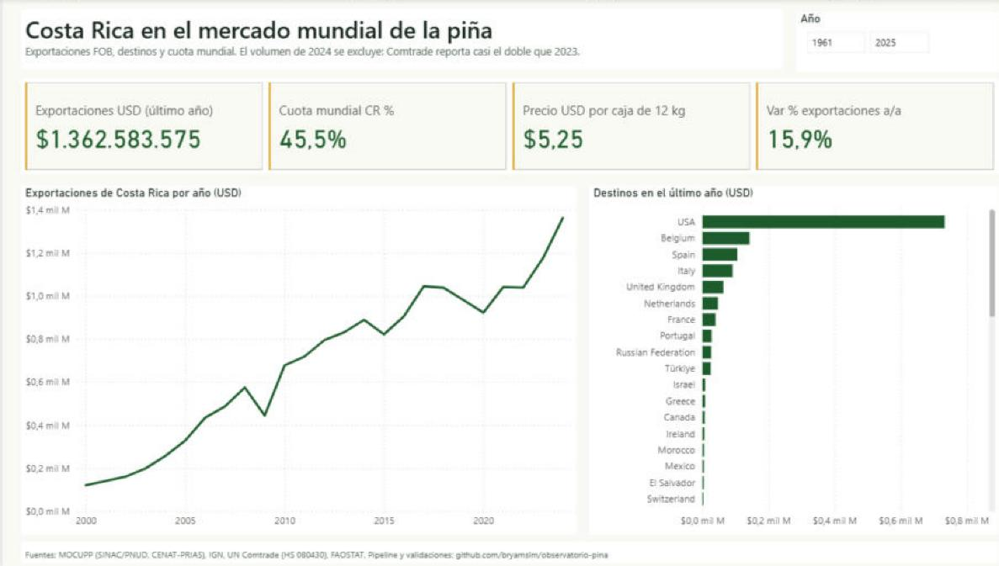
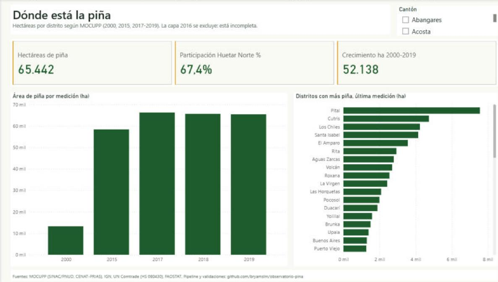
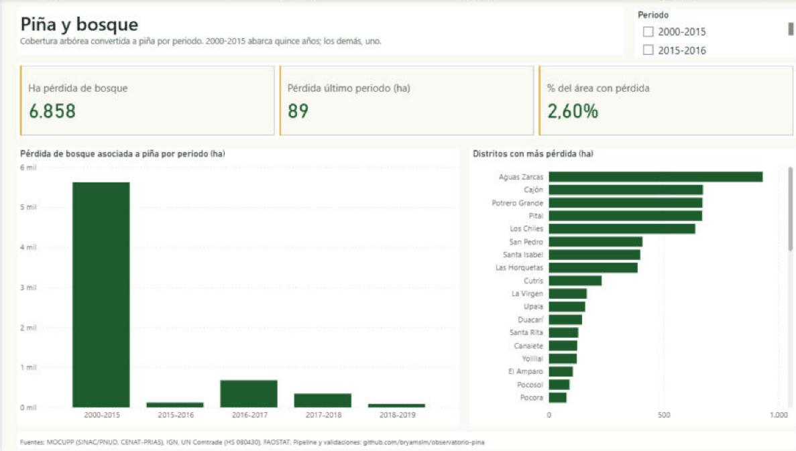
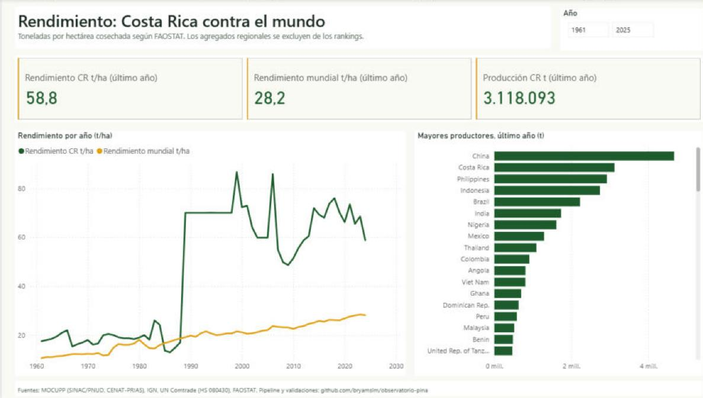
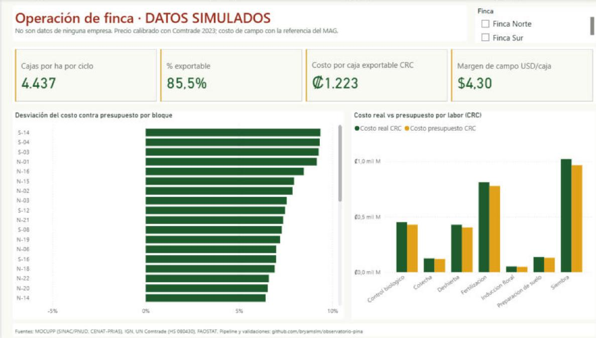

Observatorio de la piña
Datos públicos del sector, desde la parcela hasta el puerto. Satélite (MOCUPP), comercio exterior (UN Comtrade) y producción mundial (FAOSTAT) pasan a un modelo estrella en SQL Server y de ahí a un reporte de Power BI. Antes de mostrar una cifra, la contrasté con la publicación oficial.
Costa Rica es el primer exportador de piña del mundo
Valor FOB de la partida HS 080430 según UN Comtrade. La cuota mundial se calcula solo entre países y deja fuera los agregados regionales.
Exportaciones por año (millones de USD)
El volumen (kg) de 2024 no se usa: Comtrade reporta casi el doble que en 2023 con un valor que solo sube 16 %.
Destinos
Dónde está la piña
Polígonos de piña de MOCUPP (SINAC/PNUD, CENAT-PRIAS) cortados por los límites distritales del IGN. La capa de 2016 está incompleta, así que no se usa.
Distritos con más piña · 2019 (ha)
Piña y bosque
Hectáreas de cobertura arbórea convertidas a piña en cada periodo. El primer periodo cubre quince años y los demás, uno.
Pérdida de bosque asociada a piña (ha)
Rendimiento: Costa Rica contra el mundo (t/ha)
FAOSTAT, producción entre área cosechada. El mundo es el promedio ponderado de todos los países productores.
El reporte
Cinco páginas sobre un modelo estrella de 15 tablas y 38 medidas DAX. El reporte está guardado como código (PBIP: TMDL y PBIR), así que cada medida y cada visual se pueden revisar en git. La quinta página usa datos de operación simulados, con la estructura de un sistema de gestión agrícola y de un ERP.





Cómo está construido
Cada paso es un script reproducible que se puede volver a correr sin duplicar datos. El código, el modelo y el reporte están en el repositorio.
Descarga
WFS de MOCUPP e IGN, API de Comtrade y bulk de FAOSTAT. descargar.py
Limpieza
Reproyección a CRTM05, cruce espacial por distrito y normalización. procesar.py
Almacén
SQL Server 2022 (T-SQL), modelo estrella, vistas de KPI y un login de solo lectura. cargar.py
Modelo
Modelo semántico de Power BI con 38 medidas DAX, generado como código. generar_pbip.py
Publicación
Reporte de cinco páginas y esta página estática. exportar_web.py
Controles contra cifras publicadas
| Control | Calculado | Publicado |
|---|---|---|
| Área de piña 2015 | 58.427 ha | 58.426 ha · MOCUPP |
| Área de piña 2018 | 65.671 ha | 65.671 ha · MOCUPP |
| Pérdida de bosque 2017–2018 | 343 ha | “más de 343 ha” · MOCUPP |
| Huetar Norte, % del área | 67,4 % | 67 % · MOCUPP |
| Área de piña 2016 | 5.959 ha | 68.643 ha → capa incompleta, excluida |
Problemas encontrados en las fuentes
- Sistema de coordenadas mal declarado. El WFS de MOCUPP dice EPSG:4326, pero las coordenadas están en CRTM05. Sin corregirlo, el área daba 0 ha.
- Capa de 2016 incompleta. Trae 5.959 ha contra las 68.643 publicadas.
- Código de distrito duplicado. En el campo
CÓDIGOdel IGN, Chomes y San Juan de Abangares comparten el mismo valor. La llave correcta es el código DTA. - Volumen de 2024 en Comtrade. Casi el doble que en 2023 con un valor que solo sube 16 %. Se excluye del precio por kg.
- Rótulos y nombres que cambian. Cada año MOCUPP nombra distinto los tipos de cambio y Comtrade arrastra nombres históricos como “India (...1974)”. Se normalizan los dos.